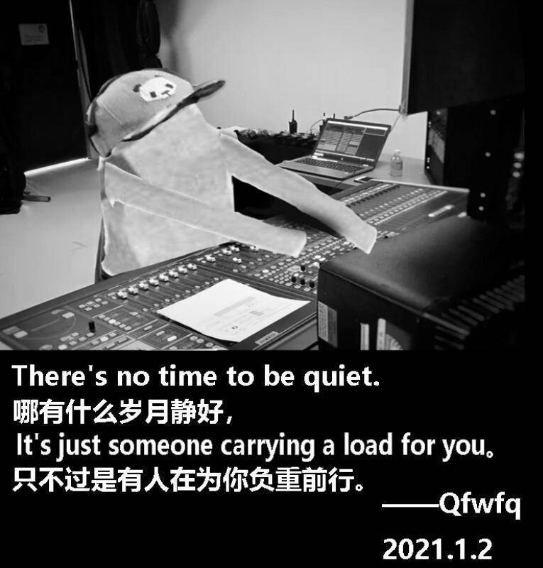

艾伊莲的再来亿次
D+500
时间法师默默的擦了一下连续释放两次时间变幻留下的汗水。
强化这个能力后，你会获得来自Time的时间法术支援。
每日两次，当你进行风度为主属性的进行表达，社交类检定时，在这次检定结果出来后，你可以自由动作（特殊的，这个自由动作在一轮内可以使用两次）在心中呼唤Time，让他给你个面子，然后时间变幻，这次检定可以重新骰一次，取第二次的检定结果。
这两次机会可以用到同一次检定中。
这是时空来源的重骰类能力，具有时空来源免疫的人虽然无法干扰时间能力的施展，但是他们会记住你上一次的表现和检定结果。
比如艾伊莲在时间法师的支援下连续唱了三首歌，没有时空来源免疫的人只记住她最后一次唱的表现，具备时空来源免疫的人会听了三遍同一首歌，并记住她每首歌的表现以及检定结果。
